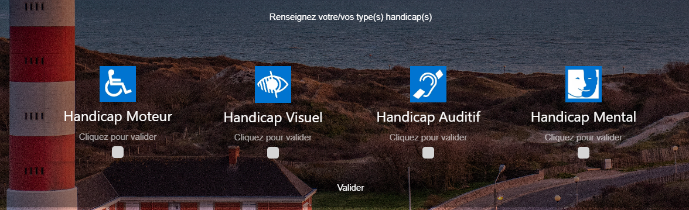

Handitourisme
Office de tourisme de Berck-Sur-Mer
Ce stage a été realisé suite à la collaboration entre le lycée Édouard Gand (BTS-SIO) et le lycée Jan Lavezzari (BTS Tourisme,BTS SP3S) associé de l'office de tourisme de Berck-Sur-Mer dans le cadre du projet REV3 tourisme-handicap-mobilité-durable
Le but était la réalisation d'un site internet renseignant les différents lieux de Berck-Sur-Mer habilité à accueillir des personnes en situation de handicap et de filtrer ces différents lieux en sélectionnant son type de handicap.
Les Sprints
Sprints réalisés hebdomadairement afin de discuter de l'avancement du projets, des fonctionnalités mises en places et celles à venir.
Outils et Technologies utilisés
L'ensemble des lieux sont répertoriés dans une base de données MYSQL avec leur coordonnées géographiques, ce qui nous permet de les afficher automatiquement dans notre carte intégrée au site web. Cette dernière est une map réalisée avec l'outil OpenSource "OpenStreetMap", combiné avec Leaflet.js qui nous permet d'afficher des points repères sur la map. Les données issues de la base de données sont envoyées au client dans un format JSON.
Eléments du site
Filtrage du handicap
Map avec repères et système de filtrage